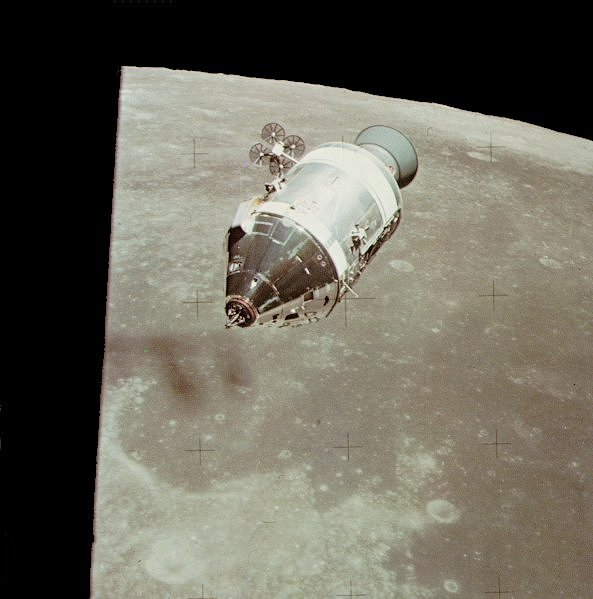
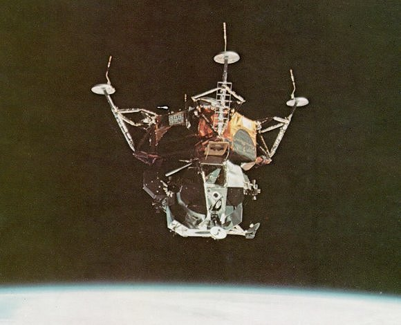

|  |
| Circling the Moon once every two hours in the CSM, one lunar explorer awaits his colleagues from the lunar surface. At the nose of the craft is the extended docking probe, ready to receive the LM. The bell-shaped rocket engine at the rear must work one more time for return. |
|  |
| Like a spider dancing upside down the lunar module makes its first solo flight in Earth orbit. The rods protruding from the footpods are to give first indication of contact with the lunar surface. The ladder on the front leg would soon serve Neil Armstrong to take that "small step for a man. . . ." |